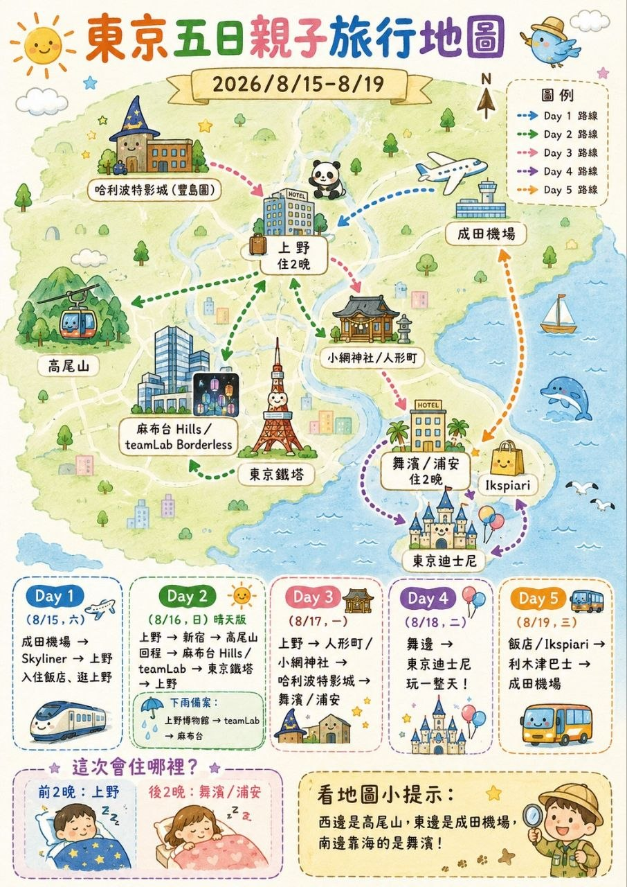

Tokyo Trip Guide
Amy Tokyo
2026
一趟夏日東京小旅行，從出發日期、移動方向到旅程節奏先整理成清楚的一頁，方便出發前快速掌握整體安排。
8/15-8/19 的東京夏日小旅行：前兩晚住上野、後兩晚住浦安，安排了影城、teamLab 與迪士尼。
Tokyo 20268/15-8/19TPE → Tokyo5 Days
At a glance
旅程資訊
先整理目前已確認的基本資訊，方便後續延伸每日安排與移動細節。
Summer 2026
Day by day
每日行程
選擇日期，快速查看當天的移動與安排。
DAY 1
抵達上野
15:30 抵達成田 → Skyliner 到上野 → 飯店 Check in → 阿美橫町晚餐
DAY 2
影城、麻布台與東京鐵塔
上野住宿
哈利波特影城 → teamLab Borderless（麻布台）→ 東京鐵塔夜拍
DAY 3
上野、池袋到浦安
搬到浦安
上野國立博物館 → 妙壽神社 → 池袋吉伊卡哇專賣店 → 前往浦安飯店 Check in
DAY 4
東京迪士尼
全天暢玩東京迪士尼。
DAY 5
回程
浦安退房 → 前往成田機場 → 16:00 班機
Stay & transport
航班與住宿
去程航班
JX802
2026/08/15 10:40 桃園機場出發
2026/08/15 15:05 抵達東京
回程航班
JX803
2026/08/19 16:20 東京出發
2026/08/19 19:00 抵達桃園機場
住宿安排
8/15 - 8/16：Hop Inn Tokyo Ueno
8/17 - 8/18：The Royal Park Hotel Maihama Resort Tokyo-Bay
Route overview
旅行地圖

Before departure
行前準備
勾選進度會保存在這台裝置。